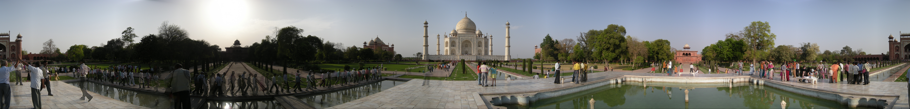
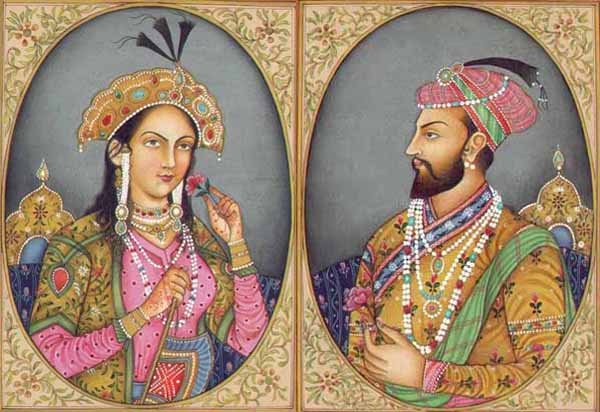
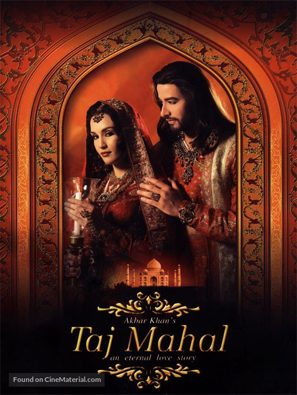
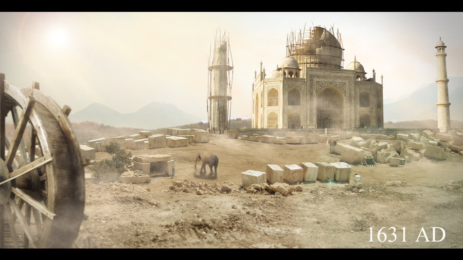
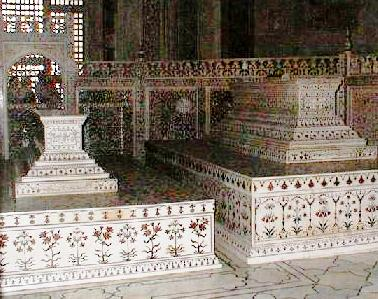
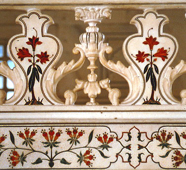
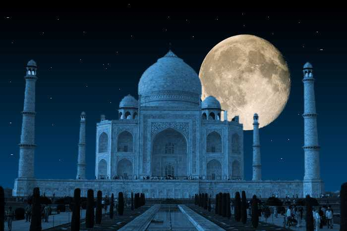
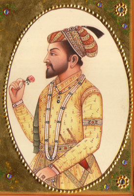
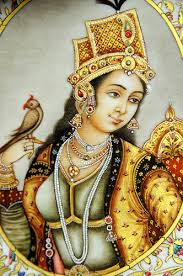

TajMahal an Eternal LoveStory
The Taj Mahal is an ivory-white marble mausoleum on the south bank of the Yamuna river in the Indian city of Agra. It was commissioned in 1632 by the Mughal emperor, Shah Jahan (reigned 1628–1658), to house the tomb of his favourite wife, Mumtaz Mahal. The tomb is the centrepiece of a 17-hectare (42-acre) complex, which includes a mosque and a guest house, and is set in formal gardens bounded on three sides by a crenellated wall.

Welcome to My Website
Inspiration
 The Taj Mahal was commissioned by Shah Jahan in 1631, to be built in the memory of his wife Mumtaz Mahal, a Persian princess who died giving birth to their 14th child, Gauhara Begum.[6] Construction of the Taj Mahal began in 1632.[7] The imperial court documenting Shah Jahan's grief after the death of Mumtaz Mahal illustrate the love story held as the inspiration for Taj Mahal.[8][9] The principal mausoleum was completed in 1643[7] and the surrounding buildings and garden were finished about five years later
Love Story
 Taj Mahal, the magnificent monument that stands at the heart of India has a story that has been melting the hearts of millions of listeners since the time Taj has been visible. A story, that although ended back in 1631, continues to live on in the form of Taj and is considered a living example of eternal love. It's the love story of Shah Jahan and Mumtaz Mahal, two people from the course of history who set an example for the people living in present and the future to come. An English poet, Sir Edwin Arnold best describes it as "Not a piece of architecture, as other buildings are, but the proud passion of an emperor's love wrought in living stones." The story that follows next will prove why the statement is true.Shah Jahan, initially named Prince Khurram, was born in the year 1592. He was the son of Jehangir, the fourth Mughal emperor of India and the grandson of Akbar the Great. In 1607 when strolling down the Meena Bazaar, accompanied by a string of fawning courtiers, Shah Jahan caught a glimpse of a girl hawking silk and glass beads. It was love at first sight and the girl was Mumtaz Mahal, who was known as Arjumand Banu Begum at that time. At that time, he was 14 years old and she, a Muslim Persian princess, was 15. After meeting her, Shah Jahan went back to his father and declared that he wanted to marry her. The match got solemnized after five years i.e., in the year 1612.It was in the year 1628 that Shah Jahan became the Emperor and entrusted Arjumand Banu with the royal seal. He also bestowed her with the title of Mumtaz Mahal, meaning the "Jewel of the Palace". Though Shah Jahan had other wives also, but, Mumtaz Mahal was his favorite and accompanied him everywhere, even on military campaigns. In the year 1631, when Mumtaz Mahal was giving birth to their 14th child, she died due to some complications. While Mumtaz was on her deathbed, Shah Jahan promised her that he would never remarry and will build the richest mausoleum over her grave.It is said that Shah Jahan was so heartbroken after her death that he ordered the court into mourning for two years. Sometime after her death, Shah Jahan undertook the task of erecting the world's most beautiful monument in the memory of his beloved. It took 22 years and the labor of 22,000 workers to construct the monument. When Shah Jahan died in 1666, his body was placed in a tomb next to the tomb of Mumtaz Mahal. This magnificent monument came to be known as "Taj Mahal" and now counts amongst the Seven Wonders of the World. This is the true story of the Taj Mahal of India, which has mesmerized many people with its bewitching beauty.
Construction
 Taj Mahal was constructed over a period of twenty-two years, employing twenty thousand workers. It was completed in 1648 C.E. at a cost of 32 Million Rupees. The construction documents show that its master architect was Ustad ‘Isa, the renowned Islamic architect of his time. The documents contain names of those employed and the inventory of construction materials and their origin. Expert craftsmen from Delhi, Qannauj, Lahore, and Multan were employed. In addition, many renowned Muslim craftsmen from Baghdad, Shiraz and Bukhara worked on many specialized tasks.The mausoleum is a part of a vast complex comprising of a main gateway, an elaborate garden, a mosque (to the left), a guest house (to the right), and several other palatial buildings. The Taj is at the farthest end of this complex, with the river Jumna behind it. The large garden contains four reflecting pools dividing it at the center. Each of these four sections is further subdivided into four sections and then each into yet another four sections. Like the Taj, the garden elements serve like Arabesque, standing on their own and also constituting the whole.The minarets have an octagonal base and cylindrical body tapering to an eight-sided open pavilion. The body of the minarets is sectioned by three balconies which create shadows and interest in an otherwise plain design. An exquisite band of marble inlay and geometric patterns sporting the chevron design encircle the minaret below the top balcony. The summit of the gold gilded finial perched on the top of the dome of the Taj Mahal reaches two hundred and twenty feet [67 meters] above the ground. At the top sits a lotus bud and under this is a water pot. This arrangement was adapted to the Islamic domain from the 12th century
 The Taj Mahal incorporates and expands on design traditions of Persian and earlier Mughal architecture. Specific inspiration came from successful Timurid and Mughal buildings including the Gur-e Amir (the tomb of Timur, progenitor of the Mughal dynasty, in Samarkand),[10] Humayun's Tomb, Itmad-Ud-Daulah's Tomb (sometimes called the Baby Taj), and Shah Jahan's own Jama Masjid in Delhi. While earlier Mughal buildings were primarily constructed of red sandstone, Shah Jahan promoted the use of white marble inlaid with semi-precious stones. Buildings under his patronage reached new levels of refinement
The Taj Mahal incorporates and expands on design traditions of Persian and earlier Mughal architecture. Specific inspiration came from successful Timurid and Mughal buildings including the Gur-e Amir (the tomb of Timur, progenitor of the Mughal dynasty, in Samarkand),[10] Humayun's Tomb, Itmad-Ud-Daulah's Tomb (sometimes called the Baby Taj), and Shah Jahan's own Jama Masjid in Delhi. While earlier Mughal buildings were primarily constructed of red sandstone, Shah Jahan promoted the use of white marble inlaid with semi-precious stones. Buildings under his patronage reached new levels of refinement
 The tomb is the central focus of the entire complex of the Taj Mahal. It is a large, white marble structure standing on a square plinth and consists of a symmetrical building with an iwan (an arch-shaped doorway) topped by a large dome and finial. Like most Mughal tombs, the basic elements are Persian in origin.The base structure is a large multi-chambered cube with chamfered corners forming an unequal eight-sided structure that is approximately 55 metres (180 ft) on each of the four long sides.
 The exterior decorations of the Taj Mahal are among the finest in Mughal architecture. As the surface area changes, the decorations are refined proportionally. The decorative elements were created by applying paint, stucco, stone inlays or carvings. In line with the Islamic prohibition against the use of anthropomorphic forms, the decorative elements can be grouped into either calligraphy, abstract forms or vegetative motifs. Throughout the complex are passages from the Qur'an that comprise some of the decorative elements. Recent scholarship suggests that the passages were chosen by Amanat Khan.
The exterior decorations of the Taj Mahal are among the finest in Mughal architecture. As the surface area changes, the decorations are refined proportionally. The decorative elements were created by applying paint, stucco, stone inlays or carvings. In line with the Islamic prohibition against the use of anthropomorphic forms, the decorative elements can be grouped into either calligraphy, abstract forms or vegetative motifs. Throughout the complex are passages from the Qur'an that comprise some of the decorative elements. Recent scholarship suggests that the passages were chosen by Amanat Khan.
 The interior chamber of the Taj Mahal reaches far beyond traditional decorative elements. The inlay work is not pietra dura, but a lapidary of precious and semiprecious gemstones.[22] The inner chamber is an octagon with the design allowing for entry from each face, although only the door facing the garden to the south is used. The interior walls are about 25 metres (82 ft) high and are topped by a "false" interior dome decorated with a sun motif.
World Wonder
 The Taj Mahal was designated as a UNESCO World Heritage Site in 1983 for being “the jewel of Muslim art in India and one of the universally admired masterpieces of the world’s heritage”. Described by Nobel laureate Rabindranath Tagore as “the tear-drop on the cheek of time”, it is regarded by many as the best example of Mughal architecture and a symbol of India’s rich history. The Taj Mahal attracts 7–8 million visitors a year.The Taj Mahal attracts a large number of tourists. UNESCO documented more than 2 million visitors in 2001,[52] which had increased to about 7–8 million in 2014.[2] A two-tier pricing system is in place, with a significantly lower entrance fee for Indian citizens and a more expensive one for foreigners. Most tourists visit in the cooler months of October, November and February. Polluting traffic is not allowed near the complex and tourists must either walk from parking lots or catch an electric bus. The Khawasspuras (northern courtyards) are currently being restored for use as a new visitor centre.
Shah Jahan
 Mirza Shahabuddin Baig Muhammad Khan Shah Jahan (26 January 1592 – 9 May 1666 OS)[1] was the fifth Mughal Emperor of India from 1628 to 1658. Born Prince Khurram, he was the son of Emperor Jahangir (31 August 1569 – 7 November 1627) and his Hindu Rajput wife, Taj Bibi Bilqis Makani (13 May 1573 – 18 April 1619).He was chosen as successor to the throne after the death of his father in 1627. He was considered one of the greatest Mughals of the Timur family. Like his grandfather, Akbar, he was eager to expand his vast empire. In 1658, he fell ill and was confined by his son and successor Aurangzeb in Agra Fort until his death in 1666.The period of his reign was considered the golden age of Mughal architecture. Shah Jahan erected many monuments, the best known of which is the Taj Mahal at Agra, built in 1632–1654 as a tomb for his beloved wife Mumtaz Mahal
Mumtz Mahal
 Mumtaz Mahal (April 1593 – 17 June 1631)[1] [mumˈt̪aːz mɛˈɦɛl]; meaning "the elect of the palace" was a Mughal Empress and chief consort of Emperor Shah Jahan. The Taj Mahal in Agra was constructed by her husband as her final resting place.She was born as Arjumand Banu Begum in Agra, to a family of Persian nobility. She was the daughter of Abdul Hasan Asaf Khan. Arjumand Banu Begum was married at the age of 19, on 10 May 1613, to Prince Khurram, later known to be Emperor Shah Jahan, who conferred upon her the title "Mumtaz Mahal". Although betrothed to Shah Jahan in 1607, she ultimately became his 4th wife in 1612. Mumtaz Mahal mothered fourteen children by Shah Jahan,She died in Burhanpur in the Deccan (now in Madhya Pradesh) during the birth of their fourteenth child, a daughter named Gauhara Begum.[2] Shah Jahan had the Taj Mahal built as a mausoleum for Mumtaz Mahal, which is considered to be a monument of "undying love"